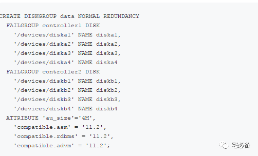

新建磁盘组
原创 2017-10-23 Oracle 宅必备
这个专题讲ASM相关的内容
接下来讲ASM 磁盘组相关的管理操作，首先是新建磁盘组
1. 新建磁盘组命令
我们通过create diskgroup命令来新建磁盘组，这里我们可以:
1.1 为磁盘组指定一个唯一的名称
磁盘组名称不区分大小写，存储时会以大写保存
1.2 指定磁盘组的冗余级别
为使ASM镜像文件，我们需要指定Normal级别和High级别
-
Normal级别可以提供两路镜像和三路镜像(需要三个故障组)
-
High级别提供三路镜像
-
External不使用ASM提供的冗余功能
磁盘组一旦创建你不可以更改冗余级别，如果需要可以建立需要的冗余级别磁盘组，然后将文件转移过去
Oracle建议故障组设置相同的大小
1.3 指定需要放入磁盘组格式化的磁盘
可以使用通配符来增加磁盘
可以使用name关键字手动指定磁盘的名称
1.4 指定各个故障组包括的磁盘(可选)
如果不指定，则Oracle会将每个磁盘化为各自的故障组
1.5 指定故障组的类型(可选)
可以设定故障组类型为QUORUM和REGULAR
-
QUORUM类型限定只能存放OCR及voting file
-
REGULAR可以放ASM允许的所有文件类型，这个为默认值
1.6 设定磁盘组的属性值(可选)
这里设定磁盘组的属性值，例如软件的兼容性和AU的大小
其他的介绍
Oracle会自动检测磁盘的大小，如果无法获取，我们可以通过size 关键字手动指定
如果一个磁盘通过force方式drop，我们必须通过force方式重新挂载
无法通过force方式挂载一个noforce方式dismount的磁盘
如果使用的是spfile，ASM会自动将建立的磁盘组加入到ASM_DISKGROUPS参数中，否则需要手动添加
2.新建磁盘组例子

-
上面的语句新建一个normal级别的名为data磁盘组
-
有controller1 controller2两个故障组
-
各个磁盘通过name关键字指定别名
-
通过 ATTRIBUTE 设置了au_size等参数，具体的意义后面介绍
3.使用asmca图形化新建磁盘组
我们也可以通过asmca命令图形化新建磁盘组，通过grid用户运行
asmca
好了，这节讲了如何新建磁盘组，下节是alter磁盘组